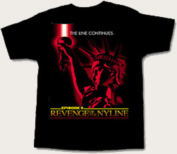

When you are on the "Line" in front of the Ziegfeld, please do not lean against or put your bags near the Alliance Capitol Building. The property owners, Fisher Bros., whose property we are standing, sitting, sleeping on, do not want any of us near the building. Security can see the Line from the camera atop the Ziegfeld, so please stay within the NYLine border marked in red tape on the sidewalk. We know that it's been like Dagobah on the Line recently with all the rain and wind, but we need to be considerate of Fisher Bros. since they gave us permission to do the Line to begin with.
Also, if you have trash, please put it in the trash receptacle across the street at the Hilton Hotel. The last thing we want is the Line to look like the trash compactor on the first Death Star. We hope to have a garbage bin at the Line by the end of this week.
The following shifts have fewer than 5 participants signed up so far. If you sign up for these shifts, you will get 20 extra points for each shift. The more points you have, the better your chances for getting prizes to be given out on the night of the first screening and preferential seating. If you're interested, contact the NYLine staff at contact@nyline.org.
There will be an "Epic Duels" game tournament this Saturday, May 4th and the winner will receive an exclusive prize from Star Wars Celebration II. Also, the first Collection Day for Starlight Donations will be Sunday, May 5th from 1-5 pm. As everyone knows, any NYLine member raising at least $50 for the Starlight Children's Foundation will receive an exclusive NYLine T-shirt. Here it is!
Ticket Update! It appears that ticket day may be tomorrow, 5/3/2002. Stay tuned for more details here at nyline.org!
Thank you all for your time and patience! See you on the pavement!
The NYLine Staff